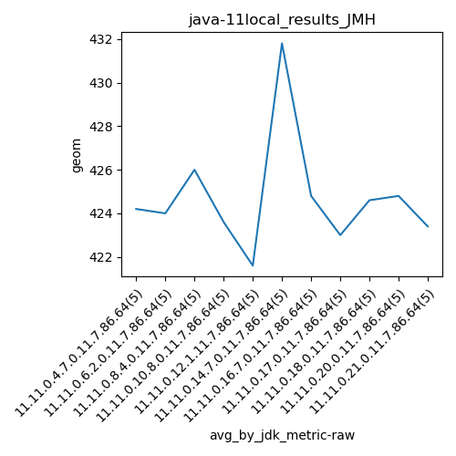

java-11 JMH
Context at bottom
/home/jvanek/git/benchmarks-in-nested-virtualisation-toolchain/final_results/local_results/local_results_JMH
java-11
JMH
local_results_JMH
final score
Expected number of java-11 JDKs: 7
1st avgmed_alljdks_metric:
/home/jvanek/git/benchmarks-in-nested-virtualisation-toolchain/final_results/result_processing.py /home/jvanek/git/benchmarks-in-nested-virtualisation-toolchain/final_results/local_results/local_results_JMH geom False
values: [424, 425, 424, 424, 424, 425, 424, 424, 422, 425, 425, 425, 423, 434, 423, 426, 422, 422, 423, 425, 425, 412, 425, 422, 424, 465, 422, 424, 425, 423, 423, 426, 425, 426, 424]

Expected number of iterations: 5
final number of values: 35 out of 35
Pass rate: 100.0%
values: (412, 465, 425.14285714285717, 424)

** accuracy from all jdks and runs
more is better
MIN: 412
MAX: 465
AVG: 425.14285714285717
MED: 424
Relative differences 1:
MIN-MAX: 11.0 %
MIN-AVG: 3.0 %
MIN-MED: 3.0 %
MAX-MIN: -13.0 %
MAX-AVG: -9.0 %
MAX-MED: -10.0 %
AVG-MED: -0.0 %
stored to java-11.properties. sort | uniq that!
2nd avgmed_by_jdk_metric:
values: [424.2, 424.0, 426.0, 423.6, 421.6, 431.8, 424.8]

values: [424, 424, 425, 423, 424, 424, 425]

values: (421.6, 431.8, 425.14285714285717, 424.2)
values: (423, 425, 424.14285714285717, 424)

** accuracy from all jdks where runs were avged
more is better
MIN: 421.6
MAX: 431.8
AVG: 425.14285714285717
MED: 424.2
Relative differences 1:
MIN-MAX: 2.0 %
MIN-AVG: 1.0 %
MIN-MED: 1.0 %
MAX-MIN: -2.0 %
MAX-AVG: -2.0 %
MAX-MED: -2.0 %
AVG-MED: -0.0 %
stored to java-11.properties. sort | uniq that!
** accuracy from all jdks where runs were medianed
more is better
MIN: 423
MAX: 425
AVG: 424.14285714285717
MED: 424
Relative differences 1:
MIN-MAX: 0.0 %
MIN-AVG: 0.0 %
MIN-MED: 0.0 %
MAX-MIN: -0.0 %
MAX-AVG: -0.0 %
MAX-MED: -0.0 %
AVG-MED: -0.0 %
stored to java-11.properties. sort | uniq that!
/home/jvanek/git/benchmarks-in-nested-virtualisation-toolchain/final_results/local_results/local_results_J2DBENCH
java-11
JMH
/home/jvanek/git/benchmarks-in-nested-virtualisation-toolchain/final_results/local_results/local_results_RADARGUNs1
java-11
JMH
/home/jvanek/git/benchmarks-in-nested-virtualisation-toolchain/final_results/local_results/local_results_RADARGUNs3
java-11
JMH
/home/jvanek/git/benchmarks-in-nested-virtualisation-toolchain/final_results/local_results/local_results_SPECJBB
java-11
JMH
/home/jvanek/git/benchmarks-in-nested-virtualisation-toolchain/final_results/local_results/local_results_DACAPO
java-11
JMH
pass rates:
local_results_JMH=100.0%
Context:
- local_results
- JMH